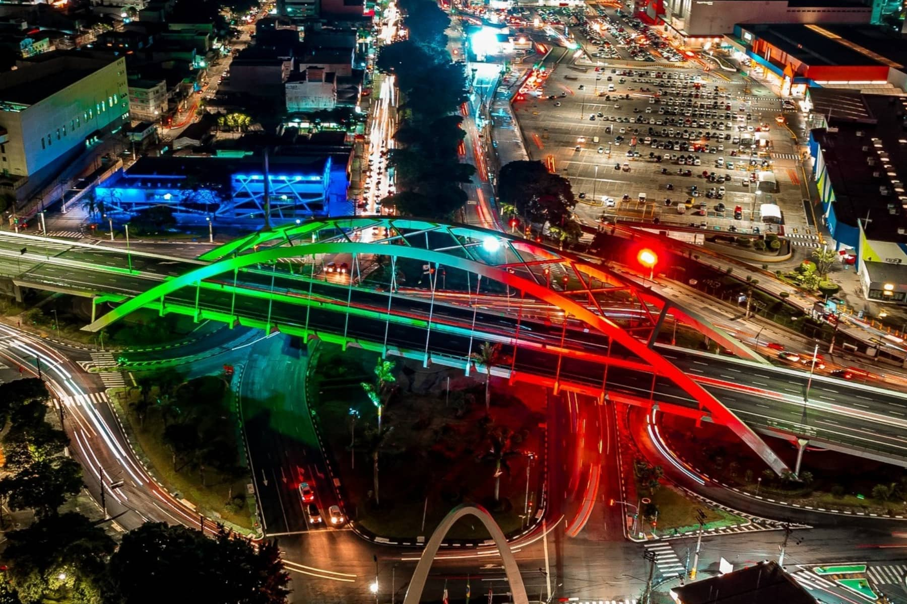
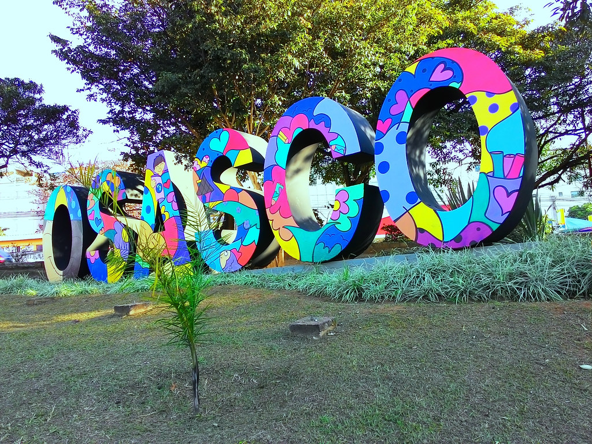

Polo Industrial e Comercial: Osasco é reconhecida como um dos maiores polos industriais do Brasil, com um parque fabril diversificado que abrange setores como metalurgia, química, eletrônica e têxtil. Essa atividade econômica intensa contribui significativamente para a geração de empregos e o desenvolvimento da cidade.
Diversidade Cultural: A cidade é marcada por uma grande diversidade cultural, resultado da migração de pessoas de diferentes regiões do país em busca de oportunidades de trabalho. Essa diversidade se reflete na gastronomia, nas festas populares e nas manifestações artísticas, criando um ambiente multicultural único.
Parques e Áreas Verdes: Apesar de ser uma cidade industrial, Osasco também possui áreas verdes que oferecem espaços de lazer e contato com a natureza para seus moradores. O Parque Chico Mendes e o Parque Municipal Dionísio Álvares Mateos são exemplos de locais onde é possível desfrutar de momentos de tranquilidade em meio à natureza.
Infraestrutura Urbana: Osasco conta com uma infraestrutura urbana bem desenvolvida, com serviços públicos eficientes, sistema de transporte coletivo e vias de acesso que facilitam a mobilidade dentro da cidade e para outras regiões da Grande São Paulo.
Educação e Cultura: A cidade possui uma oferta variada de instituições de ensino, que vão desde escolas de educação básica até faculdades e universidades. Além disso, Osasco abriga espaços culturais como teatros, cinemas e centros culturais, que promovem eventos e atividades artísticas para a população.
Desenvolvimento Tecnológico: Com o avanço da tecnologia, Osasco também se destaca como um polo de inovação e empreendedorismo, com a presença de startups e empresas de tecnologia que impulsionam o desenvolvimento econômico e social da cidade.
Patrimônio Histórico: A cidade preserva parte de sua história por meio de seu patrimônio arquitetônico e histórico, com construções antigas que remontam ao período colonial e ao ciclo do café. O Museu Histórico Municipal de Osasco é um espaço que resgata e preserva a memória da cidade.
Cultura Popular: Osasco é conhecida por suas festas populares e tradicionais, que celebram a cultura e as tradições do povo brasileiro. Festas como a Festa de São Roque, o Carnaval e as festas juninas são momentos de alegria e confraternização para os moradores.
Economia Diversificada: Além da indústria, Osasco possui uma economia diversificada, com forte presença do setor de serviços, comércio e prestação de serviços. Isso contribui para a dinâmica econômica da cidade e para a geração de renda e emprego para sua população.
Qualidade de Vida: Apesar de ser uma cidade industrial e densamente povoada, Osasco oferece uma boa qualidade de vida para seus habitantes, com acesso a serviços de saúde, educação e lazer. A cidade está em constante desenvolvimento, buscando melhorias para o bem-estar de sua população.
